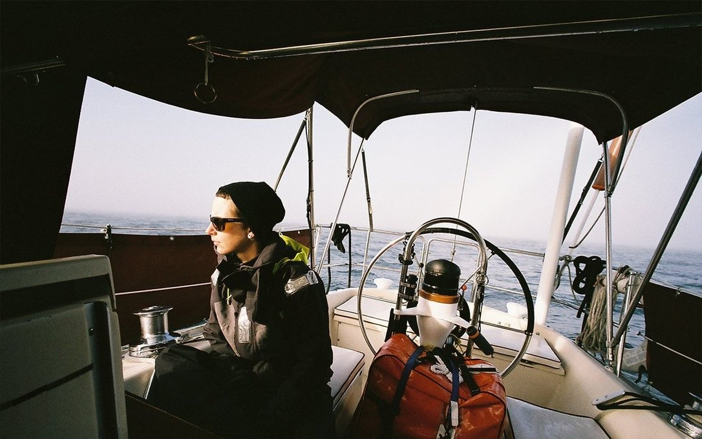
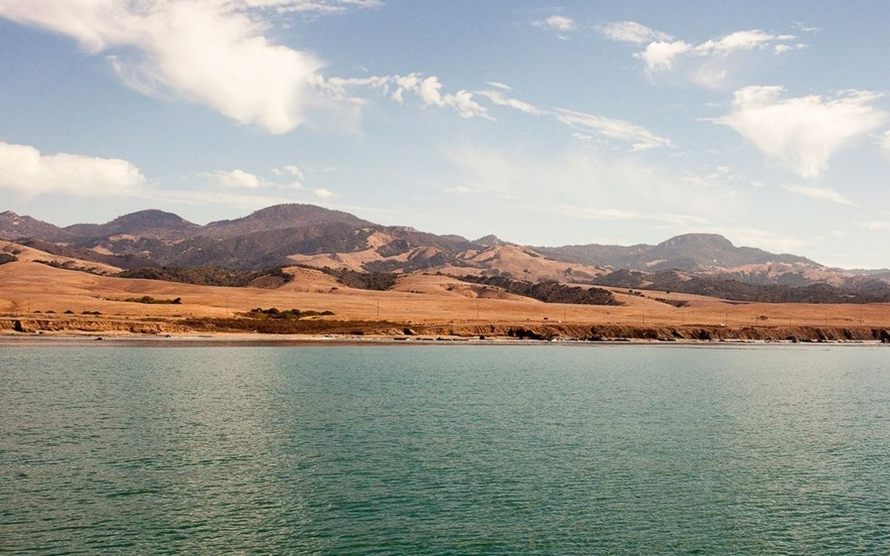

us west coast
In August 2016, we sailed into Port Angeles from Victoria to obtain a cruising permit to gain permission to sail down the west coast of the United States. Our next stop was Neah Bay, we stayed for one night with plans to leave the next day to take the dreaded Left Turn.
We left Canada with our friends from SV Essencia, leaving in good, but grey weather. The coast was foggy. We stayed 40 nm out, and kept our eyes on the radar because we could not trust our eyes. Most of the traffic was closer inland.

Newport, OR. We completed our first 3-day passage, making a first stop in Newport, Oregon to wait for some bad weather to pass in the Cape Mendocino area. The weather along the coast can get very bad when the wind picks up, luckily, there are many spots that we can tuck into to wait it out. Newport has a really good brewery (Rogue's) near the marina, and it is an easy walk across the Yaquina bridge to the main town. We met our good friends Morgan and Douglas from SY Tumbleweed here, we learned that they too had plans to sail to Japan—let's just say that we became fast friends.
Fort Bragg, CA. We parted ways with both Tumbleweed and Essencia, but met again many more times after that. pino suffered many calms, and had to stop at Fort Bragg to refuel. On our way into the harbor we saw many whales, the seas were flat and calm and we could hear and see everything. Fort Bragg is a nice fishing town, but the narrow, winding river leading to it was scary to motor through. We picked apples from a local orchard, and played badminton while waiting for the wind to return. The marina did not have a gas station, but locals drove us to one to fill our jerry cans (so nice of them). The belt for out autopilot was damaged, we would have to wait till we arrived in San Francisco to replace it. On the sail south, our gennaker tore in half. We kept the poor thing up in too much wind.
San Francisco, CA. We anchored in Drake's Bay to wait for slack tide at the mouth of San Francisco Bay. We'd read of horror stories of boats being overwhelmed by waves, so we thought it wise to wait. We used the iron wind to pass under the Golden Gate Bridge, dodging kite surfers and other sailboats. We anchored in multiple places while in town, like in the Aquatic Park and near Treasure Island. Getting to town was easy from both of these anchorages, but both were very public. We had to lock iggy when ashore. Because we did not have an outboard, I think that doing this was not problematic. No one was interested in Iggy enough to take it.
We woke up one morning, while anchored in the Aquatic Park, to a large crowd of spectators ashore. We saw people swimming in the water. It was the day of a swimming race to Alcatraz. People swam around Pino to get to their target, while we watched, intrigued and impressed.
We spent our days walking around town, working from cafes and meeting up with friends. It was easy to find boat parts here. We found a used outboard motor and replaced our torn gennaker while moored in Alameda. Our last moorage was Berkeley Marina, joining our friends Essencia and Tumbleweed. We explored the area by bicycle and started on some repairs for our sail south. We found that cycling in many American cities was challenging, due to traffic.

We serviced our engine's water pump, but coming out of the marina we started to have engine issues. Our engine was overheating. Luckily, there was good wind to carry us out into the ocean. We stopped at San Simeon Bay, because the wind died yet again and we couldn't motor. The next day we sailed off anchor for the first time, to spare our engine of this task.
San Luis Obispo. Our engine issues forced us to stop at San Luis Obispo. Some mechanics onshore helped us diagnose our problem from afar, and we made the repair ourselves. The engine was overheating because the raw water pipes were full of salt, and the thermostat too was seized. We cleared the pipes and removed the thermostat, with plans to replace it once we arrived in Los Angeles. Our engine did not give us more trouble after that. The sail to Los Angeles though was eventful...

Los Angeles. We had good wind most of the way, but when in transit south of Malibu we heard a Mayday call on the radio between a vessel in distress and the US Coastguard. We followed the events, but were surprised when the coastguard moved toward us, thinking we were the boat in need of saving. We waved them off. They disappeared in the dark and that was that! We spent a few days in the biggest marina we'd ever seen: Marina Del Rey. We saw boats with helicopters as dinghies, a show of extreme opulence. While at this marina, we met the sailor who had issued the MayDay call. His boat had encountered a bad storm further north. It wrecked his boat. He was adrift in the water and contacted authorities. They found him, but the coastguard damaged his boat trying to rescue him. Then when the rescuers towed his ship to shore, his wife left him. He was trying to light a cigarette with a battery when we met him, cursing the Coastguard and saying he had plans to sue them. We offered him a lighter.
We went to a game conference while here, but did not attend the event because we had no tickets. We hung around anyway, staying with friends between events. We traveled around by bike still, and found a really great trail that could get us almost anywhere, safely. Los Angeles is a city for automobiles, but we still found ways to get around.
San Diego. Our last stop in the US was San Diego. As we sailed in, we saw a destroyer doing some drills outside of the harbor, going in a circle and asking boats to stay away. As we approached the entrance channel, we worked our way through a minefield of crab pots... only to get caught in some seaweed further in. The boat slowed to a crawl. We started to motor backwards and managed to get out of that trap. Prior to attempting to motor back, we waved down a small fishing boat to ask for help. They refused, saying that if they did and suffered damage that their insurance wouldn't cover it. We understood this, as the threat of having to pay large sums of cash is very scary and very real... but thought it sad that people would, or could not risk helping others because of it. Being a good samaritan is too expensive in modern times. We were able to wriggle our way out, motoring backwards, hard. We anchored in Glorietta Bay, and spent 2 weeks there, waiting for good weather to sail to Ensenada in mexico.
We rowed iggy to shore everyday to Coronado Island to work from a cafe. This was another place full of rich homes and golf courses. The coffee in town wasn't great, but we needed internet and power to work and the coffee shop provided both. There was an outdoor pool nearby, which we visited often, paying a small fee to use it and the showers. We liked taking long bike rides from the island to the main part of town, but bike theft is a serious issue here. We caught someone trying to cut our locks while we were inside a store for 5 minutes (literally) in Midway District.
We were anchored right near the San Diego aquatic military base, and could hear announcements and sirens every morning. One night, we saw soldiers doing drills in the water, diving with lights with small boats following them. The American military is no joke. Many large battleships lined the shore.
Our spot in Glorietta Bay was interesting, but it was far from the main town, and we had nowhere to move to. All anchorages nearby were full because of the Baja Haha Regatta. The sailors taking part in the event move in large groups and take over every bay in passing. When they left, we had more room to move and found a spot at Shelter island police dock to fill our water. This is where we bought turnip.
We loved our time here. Our favorite part of the trip was seeing the landscape change as we moved south, from lush green to orange and deserted. The United States occupies a large, and varied territory. Its people are kind, and generous. When we had problems, no one refused to help us—well, aside from those fishermen. We had a great time, and wish we could have made many more stops.